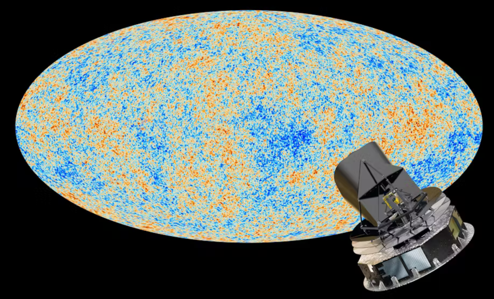

Integration of Cosmological data from the Bicep telescope into popular simulation tool CosmoMC, enabling advanced analysis of cosmic microwave background radiation data.
The BicepMC project focuses on enhancing the capabilities of CosmoMC by incorporating data from the BICEP telescope. This integration enables more comprehensive analysis of cosmic microwave background radiation, contributing to our understanding of the early universe and inflationary theory.
Successfully integrated BICEP telescope data with CosmoMC, enabling more comprehensive analysis of cosmic microwave background radiation and contributing to our understanding of the early universe.